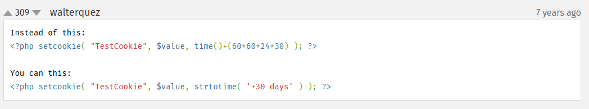
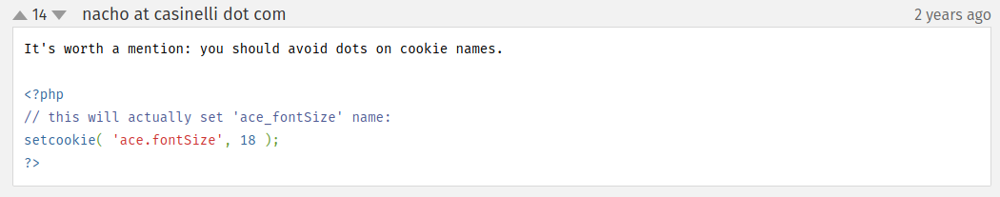

Cookies are another way of storing information.
They are stored on the user's computer (not on server).
setcookie() function is used in order to set a cookie.
It takes 2 mandatory parameters: name and value. Sometimes the expiration time parameter is also used (if neeeded).
setcookie("myCookie", "myValue") // the cookie is named myCookie and has myValue value. It'll expire at the end of session (if expiration time is omited).
setcookie("myCookie", "myValue", time()+3600) // will expire in an hour (time() function return's in seconds).
In order to delete a cookie, set the expiration time to time() - anything (as the time value is already gone).
To access a cookie just use the $_COOKIE["cookiename"] superglobal (built-in) variable.


